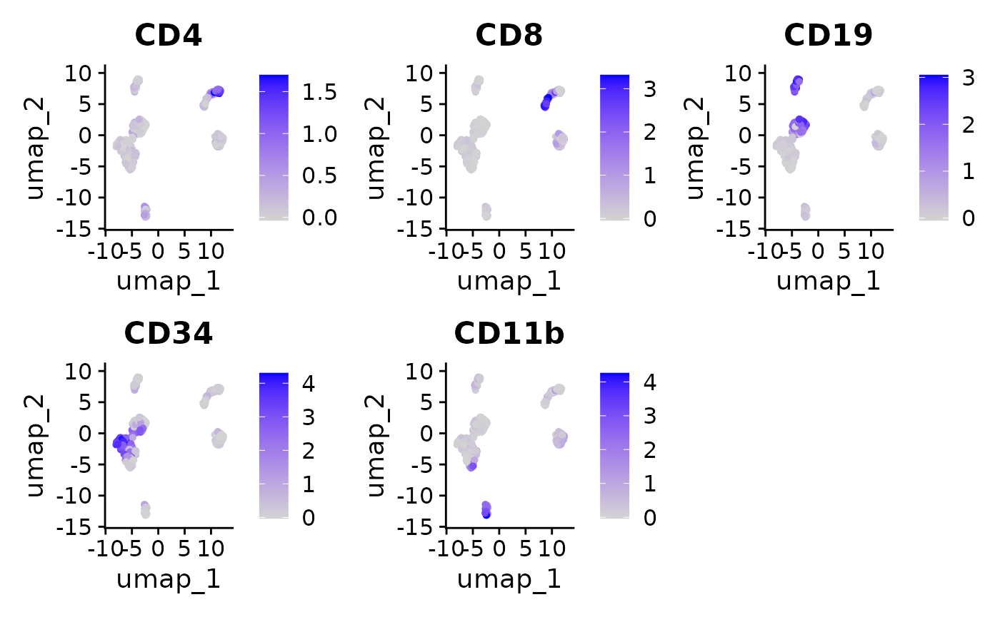
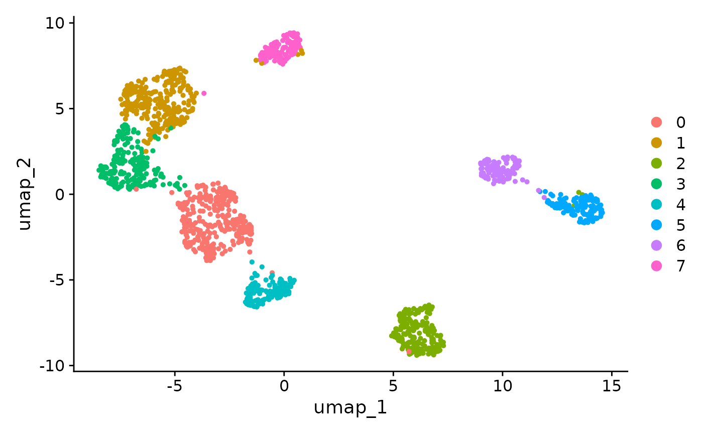
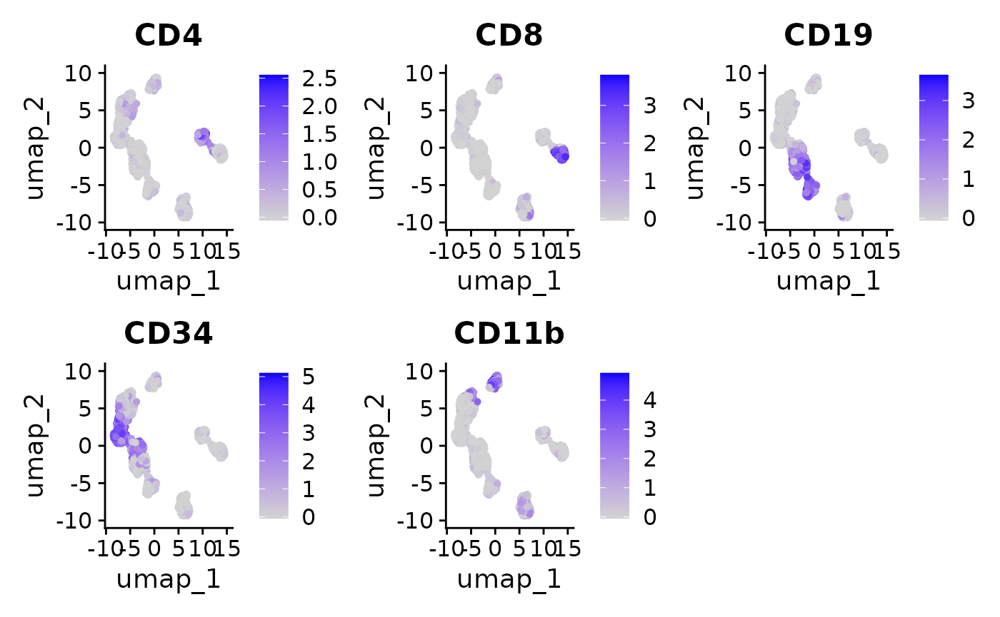

Interoperability with Seurat
Givanna Putri
Source:vignettes/interoperability_with_seurat.Rmd
interoperability_with_seurat.RmdIntroduction
How can we integrate SuperCellCyto”s output with cytometry data stored in Seurat objects? Is it possible to store the results of SuperCellCyto as Seurat objects for subsequent analysis using Seurat? The answer to both is yes.
In this vignette, we demonstrate this process using a subsampled Levine_32dim dataset used in our manuscript stored in a Seurat object. We will show how to create supercells from this data and analyse them using Seurat.
Preparing Seurat object
We first load the subsampled Levine_32dim data, stored as a qs2
using the qs_read function.
seurat_obj <- qs_read(
system.file(
"extdata",
"Levine_32dim_seurat_sub.qs2",
package = "SuperCellCyto"
)
)
seurat_obj
#> An object of class Seurat
#> 39 features across 1500 samples within 1 assay
#> Active assay: originalexp (39 features, 0 variable features)
#> 1 layer present: countsThe data is stored in the originalexp assay, with both
counts and data slots containing raw data.
Before running SuperCellCyto, we will first:
- Subset this data to retain only the markers we need to perform downstream analysis.
- Perform arcsinh transformation, and store the transformed data in
the
dataslot of theoriginalexpassay.
markers <- c(
"CD45RA", "CD133", "CD19", "CD22", "CD11b", "CD4", "CD8", "CD34",
"Flt3", "CD20", "CXCR4", "CD235ab", "CD45", "CD123", "CD321", "CD14",
"CD33", "CD47", "CD11c", "CD7", "CD15", "CD16", "CD44", "CD38", "CD13",
"CD3", "CD61", "CD117", "CD49d", "HLA-DR", "CD64", "CD41"
)
# keep only the relevant markers
seurat_obj <- seurat_obj[markers, ]
# to store arcsinh transformed data
seurat_obj[["originalexp"]]$data <- asinh(
seurat_obj[["originalexp"]]$counts / 5
)
seurat_obj
#> An object of class Seurat
#> 32 features across 1500 samples within 1 assay
#> Active assay: originalexp (32 features, 0 variable features)
#> 2 layers present: counts, dataRun SuperCellCyto
SuperCellCyto requires the input data in a data.table
format. Hence, we will extract the arcsinh-transformed data from the
Seurat object, format it into a data.table, and include sample
information and cell IDs.
It”s important to note that Seurat objects typically store cells as columns and features (markers or genes) as rows. Since SuperCellCyto expects cells as rows and features as columns, we will also transpose the data.
After transposing and preparing the data table, we run
runSuperCellCyto function, passing the required parameters
including the markers, sample column name, cell ID column name, and
gamma value.
# check.names set to FALSE so HLA-DR is not replaced with HLA.DR
dt <- data.table(
t(data.frame(seurat_obj[["originalexp"]]$data, check.names = FALSE))
)
# add the cell_id and sample metadata
dt <- cbind(dt, seurat_obj[[c("cell_id", "sample")]])
supercells <- runSuperCellCyto(
dt = dt,
markers = markers,
sample_colname = "sample",
cell_id_colname = "cell_id",
gam = 5
)
head(supercells$supercell_expression_matrix)
#> CD45RA CD133 CD19 CD22 CD11b CD4 CD8
#> <num> <num> <num> <num> <num> <num> <num>
#> 1: 0.7567786 0.2094107 0.07620974 0.009254529 0.3511375 0.78500942 0.8687925975
#> 2: 1.1482748 0.6268151 0.40876592 0.091766210 0.2766514 0.09603202 1.3321355589
#> 3: 0.1700757 0.1339944 0.07228738 0.101802043 0.1040339 0.18761509 0.1132434207
#> 4: 0.8968968 0.2921571 2.22313786 0.450342888 0.4193913 0.23917011 0.1332567931
#> 5: 0.1476499 0.1904578 0.11589638 0.106288009 0.2489399 0.52420384 0.4813924176
#> 6: 0.3801373 0.2772991 0.68028804 0.237641653 0.2007602 0.04097948 0.0001923242
#> CD34 Flt3 CD20 CXCR4 CD235ab CD45 CD123
#> <num> <num> <num> <num> <num> <num> <num>
#> 1: 0.11526045 0.5488327 0.041534679 1.2172962 0.6303494 5.788989 0.070171026
#> 2: 0.12708141 0.0793773 0.053358629 0.3920845 0.5637494 5.785661 0.084488379
#> 3: 3.23152402 0.1749861 0.008712508 0.5421237 0.1212147 3.416994 0.066197760
#> 4: 0.30587619 0.5787963 0.136006539 1.3302008 0.3211722 4.369223 0.698444542
#> 5: 0.05301752 0.3468969 0.092965825 0.2609136 0.5636011 5.684187 -0.003512615
#> 6: 2.13054119 0.1427986 0.005927587 0.5651623 0.1386637 3.051677 0.143230069
#> CD321 CD14 CD33 CD47 CD11c CD7 CD15
#> <num> <num> <num> <num> <num> <num> <num>
#> 1: 1.500236 0.04154518 0.06746186 3.221072 0.2123768 2.28170702 0.2050279
#> 2: 1.656612 0.08216914 0.12675445 2.043989 0.1105668 2.43975076 0.2104722
#> 3: 2.803258 0.02104697 0.17107591 2.657387 0.3190474 0.03814356 0.2649500
#> 4: 2.654545 0.01727268 0.24770161 4.576991 0.4200163 0.09815344 0.3564437
#> 5: 1.466286 0.08933425 0.02555677 2.352106 0.1591512 2.55868425 0.1185639
#> 6: 2.040685 0.09609030 0.35279157 3.578527 0.2416795 0.02281908 0.5117449
#> CD16 CD44 CD38 CD13 CD3 CD61 CD117
#> <num> <num> <num> <num> <num> <num> <num>
#> 1: 0.03168278 2.925953 0.6649237 0.09905437 5.10948135 0.05358984 0.281380801
#> 2: 0.10139879 4.354774 1.1550810 0.22855225 0.58614888 0.16057716 0.003634178
#> 3: 0.04358262 2.895200 0.9998574 0.31835180 0.15497706 0.05665786 0.993750340
#> 4: 0.35695241 5.021503 6.2330245 0.64945662 0.17109374 0.18993344 0.082566733
#> 5: 0.08155028 2.924965 0.3143248 0.09534336 4.89098214 0.22921411 0.059164421
#> 6: 0.06652319 2.830727 3.7236044 0.71869068 0.09991223 0.28525846 0.111576001
#> CD49d HLA-DR CD64 CD41 sample SuperCellId
#> <num> <num> <num> <num> <char> <char>
#> 1: 0.3529696 0.1407416 0.09377686 0.07614376 H1 SuperCell_1_Sample_H1
#> 2: 0.8440716 0.2467888 0.18515576 0.28544083 H1 SuperCell_2_Sample_H1
#> 3: 1.0233080 1.6318626 0.25253230 0.04277276 H1 SuperCell_3_Sample_H1
#> 4: 1.5830615 0.0820442 0.03792944 0.16956875 H1 SuperCell_4_Sample_H1
#> 5: 0.3508159 0.1748238 0.11055986 0.04522353 H1 SuperCell_5_Sample_H1
#> 6: 1.6866826 3.0233062 0.13634514 0.40852578 H1 SuperCell_6_Sample_H1We can now embed the supercell ID in the metadata of our Seurat object.
seurat_obj$supercell_id <- factor(supercells$supercell_cell_map$SuperCellID)
head(seurat_obj[[]])
#> orig.ident nCount_originalexp nFeature_originalexp population_id sample
#> Cell_1 Cell 782.3311 23 Basophils H1
#> Cell_2 Cell 849.1107 28 Basophils H1
#> Cell_3 Cell 1349.6991 21 Basophils H1
#> Cell_4 Cell 908.6923 23 Basophils H1
#> Cell_5 Cell 723.2195 27 Basophils H1
#> Cell_6 Cell 444.4285 22 Basophils H1
#> cell_id supercell_id
#> Cell_1 cell_1 SuperCell_22_Sample_H1
#> Cell_2 cell_2 SuperCell_50_Sample_H1
#> Cell_3 cell_3 SuperCell_28_Sample_H1
#> Cell_4 cell_4 SuperCell_141_Sample_H1
#> Cell_5 cell_5 SuperCell_141_Sample_H1
#> Cell_6 cell_6 SuperCell_99_Sample_H1Analyse Supercells as Seurat object
The supercell expression matrix, having fewer supercells than the number of cells in the Seurat object, is best stored as a separate Seurat object. This allows us to use Seurat”s functions for analysis.
To do this, we first transpose the expression matrix, ensuring cells
are columns and markers are rows, and then create a new Seurat object
with the default RNA assay. The data and
counts slots of the RNA assay are then set to contain the
marker expression.
supercell_mat <- t(
supercells$supercell_expression_matrix[, markers, with = FALSE]
)
colnames(supercell_mat) <- supercells$supercell_expression_matrix$SuperCellId
supercell_seurat_obj <- CreateSeuratObject(counts = supercell_mat)
#> Warning: Data is of class matrix. Coercing to dgCMatrix.
supercell_seurat_obj[["RNA"]]$data <- supercell_seurat_obj[["RNA"]]$counts
supercell_seurat_obj
#> An object of class Seurat
#> 32 features across 300 samples within 1 assay
#> Active assay: RNA (32 features, 0 variable features)
#> 2 layers present: counts, dataWith the supercell marker expression stored as a Seurat object, we can proceed with performing downstream analysis such as clustering and creating UMAP plots.
# Have to do this, otherwise Seurat will complain
supercell_seurat_obj <- ScaleData(supercell_seurat_obj)
supercell_seurat_obj <- RunPCA(
object = supercell_seurat_obj,
npcs = 10,
nfeatures.print = 1,
approx = FALSE,
seed.use = 42,
features = markers
)
supercell_seurat_obj <- FindNeighbors(supercell_seurat_obj, dims = 1:10)
supercell_seurat_obj <- FindClusters(supercell_seurat_obj, resolution = 0.5)
#> Modularity Optimizer version 1.3.0 by Ludo Waltman and Nees Jan van Eck
#>
#> Number of nodes: 300
#> Number of edges: 6654
#>
#> Running Louvain algorithm...
#> Maximum modularity in 10 random starts: 0.8756
#> Number of communities: 7
#> Elapsed time: 0 seconds
supercell_seurat_obj <- RunUMAP(supercell_seurat_obj, dims = 1:10)
#> Warning: The default method for RunUMAP has changed from calling Python UMAP via reticulate to the R-native UWOT using the cosine metric
#> To use Python UMAP via reticulate, set umap.method to 'umap-learn' and metric to 'correlation'
#> This message will be shown once per session
DimPlot(supercell_seurat_obj, reduction = "umap")
#> Warning: `aes_string()` was deprecated in ggplot2 3.0.0.
#> ℹ Please use tidy evaluation idioms with `aes()`.
#> ℹ See also `vignette("ggplot2-in-packages")` for more information.
#> ℹ The deprecated feature was likely used in the Seurat package.
#> Please report the issue at <https://github.com/satijalab/seurat/issues>.
#> This warning is displayed once every 8 hours.
#> Call `lifecycle::last_lifecycle_warnings()` to see where this warning was
#> generated.
FeaturePlot(
supercell_seurat_obj,
features = c("CD4", "CD8", "CD19", "CD34", "CD11b"), ncol = 3
)
#> Warning: The `slot` argument of `FetchData()` is deprecated as of SeuratObject 5.0.0.
#> ℹ Please use the `layer` argument instead.
#> ℹ The deprecated feature was likely used in the Seurat package.
#> Please report the issue at <https://github.com/satijalab/seurat/issues>.
#> This warning is displayed once every 8 hours.
#> Call `lifecycle::last_lifecycle_warnings()` to see where this warning was
#> generated.
Transfer information from supercells to single-cell Seurat object
To transfer information (e.g., clusters) obtained from analyzing supercells back to the single cells, we need to do some data wrangling. The key is ensuring the order of the new information aligns with the order of cells in the Seurat object.
We demonstrate this using cluster information as an example. We first
extract the metadata from the single-cell Seurat object and clustering
information from the supercells Seurat object into two different
data.table objects. We then merge them using
merge.data.table, setting the sort parameter
to FALSE and x parameter to the data.table
containing the metadata from the single-cell Seurat object. These ensure
the result is in the order of the metadata from our single-cell Seurat
object.
clusters <- data.table(
supercell_id = colnames(supercell_seurat_obj),
cluster = as.vector(Idents(supercell_seurat_obj))
)
cell_metadata <- seurat_obj[[]]
cell_metadata <- merge.data.table(
x = cell_metadata,
y = clusters,
by = "supercell_id",
sort = FALSE
)After merging, we can add the cluster assignment to the metadata of the single-cell Seurat object.
seurat_obj$cluster <- cell_metadata$cluster
Idents(seurat_obj) <- "cluster"Then visualise the cluster assignments and marker expressions of our clustered single cell data.
seurat_obj <- ScaleData(seurat_obj)
seurat_obj <- RunPCA(
object = seurat_obj,
npcs = 10,
nfeatures.print = 1,
approx = FALSE,
seed.use = 42,
features = markers
)
seurat_obj <- FindNeighbors(seurat_obj, dims = 1:10)
seurat_obj <- FindClusters(seurat_obj, resolution = 0.5)
#> Modularity Optimizer version 1.3.0 by Ludo Waltman and Nees Jan van Eck
#>
#> Number of nodes: 1500
#> Number of edges: 49470
#>
#> Running Louvain algorithm...
#> Maximum modularity in 10 random starts: 0.9073
#> Number of communities: 8
#> Elapsed time: 0 seconds
seurat_obj <- RunUMAP(seurat_obj, dims = 1:10)
DimPlot(seurat_obj, reduction = "umap")
FeaturePlot(
seurat_obj,
features = c("CD4", "CD8", "CD19", "CD34", "CD11b"), ncol = 3
)
Session information
sessionInfo()
#> R version 4.5.1 (2025-06-13)
#> Platform: x86_64-pc-linux-gnu
#> Running under: Ubuntu 24.04.3 LTS
#>
#> Matrix products: default
#> BLAS: /usr/lib/x86_64-linux-gnu/openblas-pthread/libblas.so.3
#> LAPACK: /usr/lib/x86_64-linux-gnu/openblas-pthread/libopenblasp-r0.3.26.so; LAPACK version 3.12.0
#>
#> locale:
#> [1] LC_CTYPE=C.UTF-8 LC_NUMERIC=C LC_TIME=C.UTF-8
#> [4] LC_COLLATE=C.UTF-8 LC_MONETARY=C.UTF-8 LC_MESSAGES=C.UTF-8
#> [7] LC_PAPER=C.UTF-8 LC_NAME=C LC_ADDRESS=C
#> [10] LC_TELEPHONE=C LC_MEASUREMENT=C.UTF-8 LC_IDENTIFICATION=C
#>
#> time zone: UTC
#> tzcode source: system (glibc)
#>
#> attached base packages:
#> [1] stats graphics grDevices utils datasets methods base
#>
#> other attached packages:
#> [1] future_1.67.0 SuperCellCyto_0.99.2 data.table_1.17.8
#> [4] Seurat_5.3.0 SeuratObject_5.2.0 sp_2.2-0
#> [7] qs2_0.1.5 BiocStyle_2.36.0
#>
#> loaded via a namespace (and not attached):
#> [1] RColorBrewer_1.1-3 jsonlite_2.0.0 magrittr_2.0.4
#> [4] spatstat.utils_3.2-0 farver_2.1.2 rmarkdown_2.29
#> [7] fs_1.6.6 ragg_1.5.0 vctrs_0.6.5
#> [10] ROCR_1.0-11 spatstat.explore_3.5-2 htmltools_0.5.8.1
#> [13] sass_0.4.10 sctransform_0.4.2 parallelly_1.45.1
#> [16] KernSmooth_2.23-26 bslib_0.9.0 htmlwidgets_1.6.4
#> [19] desc_1.4.3 ica_1.0-3 plyr_1.8.9
#> [22] plotly_4.11.0 zoo_1.8-14 cachem_1.1.0
#> [25] igraph_2.1.4 mime_0.13 lifecycle_1.0.4
#> [28] pkgconfig_2.0.3 Matrix_1.7-3 R6_2.6.1
#> [31] fastmap_1.2.0 fitdistrplus_1.2-4 shiny_1.11.1
#> [34] digest_0.6.37 patchwork_1.3.2 tensor_1.5.1
#> [37] RSpectra_0.16-2 irlba_2.3.5.1 textshaping_1.0.3
#> [40] labeling_0.4.3 progressr_0.16.0 spatstat.sparse_3.1-0
#> [43] httr_1.4.7 polyclip_1.10-7 abind_1.4-8
#> [46] compiler_4.5.1 withr_3.0.2 S7_0.2.0
#> [49] BiocParallel_1.42.2 fastDummies_1.7.5 MASS_7.3-65
#> [52] tools_4.5.1 lmtest_0.9-40 httpuv_1.6.16
#> [55] future.apply_1.20.0 goftest_1.2-3 glue_1.8.0
#> [58] nlme_3.1-168 promises_1.3.3 grid_4.5.1
#> [61] Rtsne_0.17 cluster_2.1.8.1 reshape2_1.4.4
#> [64] generics_0.1.4 gtable_0.3.6 spatstat.data_3.1-8
#> [67] tidyr_1.3.1 stringfish_0.17.0 spatstat.geom_3.6-0
#> [70] RcppAnnoy_0.0.22 ggrepel_0.9.6 RANN_2.6.2
#> [73] pillar_1.11.1 stringr_1.5.2 spam_2.11-1
#> [76] RcppHNSW_0.6.0 later_1.4.4 splines_4.5.1
#> [79] dplyr_1.1.4 lattice_0.22-7 survival_3.8-3
#> [82] deldir_2.0-4 tidyselect_1.2.1 miniUI_0.1.2
#> [85] pbapply_1.7-4 knitr_1.50 gridExtra_2.3
#> [88] bookdown_0.44 scattermore_1.2 xfun_0.53
#> [91] matrixStats_1.5.0 stringi_1.8.7 lazyeval_0.2.2
#> [94] yaml_2.3.10 evaluate_1.0.5 codetools_0.2-20
#> [97] SuperCell_1.0.1 tibble_3.3.0 BiocManager_1.30.26
#> [100] cli_3.6.5 uwot_0.2.3 RcppParallel_5.1.11-1
#> [103] xtable_1.8-4 reticulate_1.43.0 systemfonts_1.2.3
#> [106] jquerylib_0.1.4 Rcpp_1.1.0 globals_0.18.0
#> [109] spatstat.random_3.4-2 png_0.1-8 spatstat.univar_3.1-4
#> [112] parallel_4.5.1 pkgdown_2.1.3 ggplot2_4.0.0
#> [115] dotCall64_1.2 listenv_0.9.1 viridisLite_0.4.2
#> [118] scales_1.4.0 ggridges_0.5.7 crayon_1.5.3
#> [121] purrr_1.1.0 rlang_1.1.6 cowplot_1.2.0